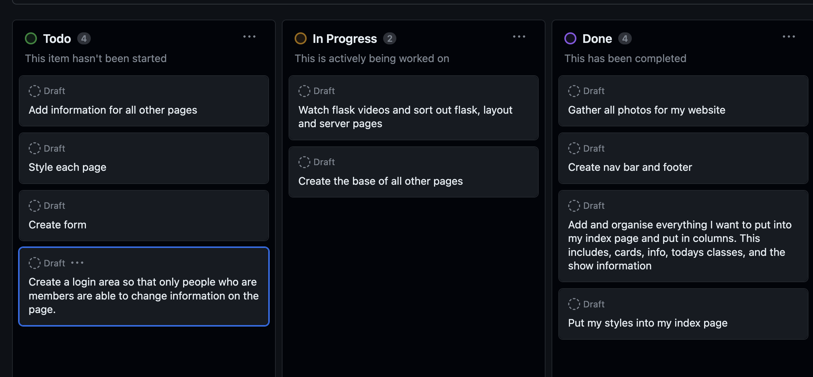
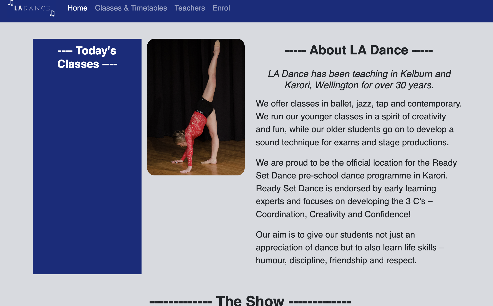

Brief
I have been asked to develop a new website for my dance studio, which is LA Dance, located in Kelburn, Wellington.
My aims were to create a site that is easily navigated, along with having all the necessary information such as the timetable, what the school offers, as well as interesting things that will entice people to join.
Link to user experience planning
Main Webpage
Relevant Implications (Description)
Privacy
The main thing that privacy is in the case of our webpage design is to not allow our users information to get leaked or anything like that. I have to ask the user some personal questions when they are completing the form to enrol, but I need to make sure that we only ask the questions and receive information that is necessary and will be useful. But I will not ask them any questions that are too personal or that I do not need. For example, I will not ask them for their address, as that is not my business and I do not need that information, but I will have to ask them for their names, emails and ages. It is important that this information stays private and no one else is able to access it, which is what I will hopefully use my database for. One of the main thing that I need to focus on for databases is not having the database directly accessible by the user. This means that the user cannot access the data directly through the website, or any web link. We also need to ensure that all of our passwords are hashed out, meaning that nobody is able to view it.Functionality
One of the most important aspects of creating my web page is that it is functional and users are able to use it with ease. When relating it to the databases, the most important thing is that it works correctly, and that all data is consistent within each different cell in the tables. The foreign key references need to be very clear and well labelled, so, for example, the correct member is associated with the news post that they made.The database being functional means making sure that it does not crash, whatever the input is, and all the dates and times are correct. The way that we can ensure our database will be functional at all times is by creating accurate entity diagrams, and constantly testing everything out to make sure there are no crashes. This also includes making sure that all of my links and different pages flow well with each other and there are no issues when moving through each part of my webpage.Sustainability and Future-Proofing
These two essentially mean that my web page along with my database is able to be maintained and changed easily in the future. For example, names, titles, dates, and times should all be changeable in one place, and if they need to be used in other tables, they need to be referenced using foreign keys. A way that I will incorporate this into my page is by two of the tables that I might make are for members and news, but I will somehow need to link these to ensure that only members can update, delete and add news items. This can be done through the foreign keys. This means that if their name is updated in one table, I do not need to go and change it in the other table. Overall, the databases should all be for different entities, for example, the dance class schedule needs to be in a different table to the news table. This makes everything easy to use, now and in the future, but it also ensures that we are able to add new tables very easily. My whole webpage needs to be commented well as if someone else were to look at it, it is important that they understand what is going on at all times, to ensure that if anything goes wrong or they need to change something, they are able to.End User Considerations
End User Consideration means that the information in all of my website has to be presented in a way that is easily understandable for any user. This means it needs to be clearly formatted and the structure needs to be well organised, as well as being modern enough to reach the users expectations. This is to ensure that the user doesn’t have any difficulty trying to navigate the site, and is able to enjoy their experience on my webpage. When a user is entering details, into either a form or to sign in, they need to always be aware of what is going on, and if they enter an invalid email address or date, then the need to be shown that they had an error and what section it was under. This means that the users ability to sign in and interact with the website/database as easily as possible.
Planning
This is my project backlog captured part way through my project
General Brainstorming and Design Ideas
Webpage
Starting Design (Sprint One)
The aim for the first design that I came up with was just to get a home page fully styled and completed, which would then set the tone for the rest of my website. This included trialing different images and styles of text, while getting feedback from my teacher Mr K and my stakeholder, my dance teacher Lynlee Anne.
Reflection
The image above is the first design that I came up with, as you can see, the image does not sit nicely next to the next and section for the days classes and the about us information. As this was only my first design, and nothing was set in stone, I know that I was able to fiddle with it and change things around to ensure that everything sat the nicest on my page.
The image on the left is the current design that I have now, which has been adapted to ensure that everything looks and flows the best that it possibly can. I have gotten rid of the image next to the text, which has allowed for a better layout. Having a better layout means that users are able to understand and follow what is going on at all points throughout the page. At this point in time, everything was functional and I was able to move further into my project.
Sprint Two (Flask)
The aim for this sprint was to expand on my current webpage, and create the rest of my pages for my webpage. The pages that I want to include for this sprint are a classes/timetable page, and a teachers page. One of the most important things when trying to make a webpage look cohesive and profesional, is to sue flask. Flask helps us to create a base set of code, that will be identical for all the pages, making each page similar and ensuring that the user doesn't have any surprises while navigating my webpage. As well ask sorting out the flask aspect of it, I also needed to figure out the information going into both of these pages, as well as how I wanted to set it up.
Interesting code
from flask import Flask, render_template, request, redirect, url_for, session
app = Flask(__name__)
@app.route('/')
def index():
return render_template("index.html", day_classes=result);
@app.route('/classes')
def classes():
return render_template("classes.html", classes=result)
@app.route('/teachers')
def teachers():
return render_template("teachers.html")
@app.route('/enrol', methods=["GET", "POST"])
def enrol():
return render_template("enrol.html", **temp_form_data)
@app.route('/notices')
def notices():
return render_template("notices.html", news=result)
Reflection
As we can see from both screenshotted pages, the nav bar is identical and although from these two pictures we cannot compare the footers, this is also the same. I did this by creating a layout page of code, where I put everything that I wanted to be the same in. Which was basically just my nav and footer, but included all styles as well such as background colour and text colour. In the photo down below I have put some of the code that I used for flask. Because I used flask, I liked the way that everything looked and how ti all flowed together. This made it look more professional than any other webpage that I had made in the past few years. The pages in these images are new pages that I have created using flask, and I have designed them and put in all of the information so that they are now complete. Above is also some interesting code that I used to set up my flask program. At this point in my project I have completed three main pages using flask, and the next step is to create my enrollment form.
Sprint Three (Enrollment form)
The aim for this sprint was to create a well functioning form that users were able to express their interest in the dance studio. The questions that I need to ask included things such as their name, age, email address, and what their ability or previous experience of dance was. This is in order to ensure that the student is put into the correct lessons, and that I am able to contact the parents. As well as creating a functioning enrollment form, I also want to create a page that the site goes to when the user clicks submit. This is just a confirmation page to double check that all of the users information is correct. Validation will be really important in this sprint because the user is entering something in, and the computer has to be able to deal with invalid answers.
Video
The video below is of me using the enrollment form that I have created. You can see that it asks all of the necessary information, and when you reach the confirm page, you are able to either go back and edit your answers, or confirm them which takes you back to the home page. From this video you can also see the validation that I have included, which ensures that a proper email address is entered.
Here are two photos of my finished project backlog and my git commit history.
Reflection
Overall, we can see that I have achieved the goal that I had set out to do, which was to create a page where people were able to enrol and show interest in the dance school. There is validation that ensures that users put in correct details, and a confirm page to make sure that the user is happy with everything that they have entered. As of right now, this form does not go anywhere and nobody is really able to access it, so that is something that I would love to improve on and work on in the future. I would also liek to adjust how the images lay in my confirm page. But overall I am very happy with how everything turned out.
Databases
Starting Design (Sprint One)
This is the first design that I came up with when I was creating my first set of databases. It is two different tables that link with a foreign key, of the member_id. These tables are for my notices page, and are an important section as it ensures that people are kept up to date with the latest events and notices. My aim for this sprint was to create the base of the database, which was two tables that were linked to each other. In this sprint I also wanted to start building my news page, and incorporating the databases into it. The plan for creating these databases are down below. The photo on the right is what my project backlog was looking like for this section. Having project backlogs are very important as it helps us to lay everything out and see what we need to complete. This is so we do not miss or forget to do anything throughout the process.
Screenshots of a test sql query, and its output.
Testing was an important aspect when creating my database. Testing was used to ensure that I could extract information out of the tables without any errors before I added it to my website. Below on the left you can see the code i used to extract the news items out of my database and on the right is the output that was produced from my testing. This showed me that i was able to pull out the information without any errors so my next step was to add this aspect to my website.
This is a video of how my news page works, and it shows how we can update, delete and add different news items. (PS. This was filmed after sprint two was created so the login page has already been created)
Interesting code
Creating of tables
create table member(
member_id integer primary key autoincrement not null,
name text not null,
email text not null unique,
password text not null,
authorisation integer not null
);
create table news(
news_id integer primary key autoincrement not null,
title text not null unique,
subtitle text not null unique,
content text not null unique,
newsdate date not null ,
member_id integer not null,
foreign key(member_id) references member(member_id)
);
Reflection
- After completing this sprint of my databases, one of the things that I was most pleased about was the fact that I was able to create workable buttons and pages for adding, updating and deleting news items. This means that users are able to change whatever they need, without having to go into the whole PyCharm console, and they are able to do everything straight through the website. This means that my website is very user friendly, and can be easily accesable to whoever needs it.
- While I was working on this part fo my database, the one thing that I tried to complete was to make the cards separate. This means that what I would have liked to see was one separate light blue card for each news item, but because unfortunately I was not able to figure out how to do that, I just had to put a little break in between each one, which was not ideal. I think that if they were separate, it would have been easier for customers and members to read the page, and it would be more aesthetically pleasing.
- Overall, while creating my database, there were many challenges, for example I came across an issue where even if I updated a news item, it wouldn;t show on website. Luckily I was able to get some help, and my problem was fixed, but the problem that I wasn't able to fix was the issue of the cards. Apart from that I was very happy with the result I got, but there was many more things that I needed to complete. In my next sprint, I need to create a login/logout page, to make sure that only members such as teachers were able to edit this page.
Sprint Two
What I wanted to focus on for this sprint was creating a login and logout system which will ensure that only people that are members of the dance page can edit things. In my last sprint, I focussed on the news table, and incorporating that into my website, but for this sprint, I need to focus on using the members table that I created in the last sprint, which has a foreign key linking the news and members table together.
Project Backlog / Screenshots / Testing
The photo above is an updated version of my project backlog, which once again, is very important is it allows us to have goals and follow those goals, without getting off track. The photo next to it is a screenshot of my page once someone has successfully logged in, which is necessary because everyone is now always aware of what is happening on their web page. In the video that I put above, during the first sprint, you can see that when you are not logged in, users are not able to edit the news page, but when users do log in, they are now able to see that they are logged in, as well as having the ability to update, add and delete news items. Something else that I also needed to do, as this was a form, with inputs that need to be valid, is make sure that there is some form of validation. In this case, it means making sure the email that was put in was a valid email, and from the images below, we can see that the program knows what a valid/invalid email address is, and it tells the user what they have done incorrectly.
Reflect
- During this sprint, one of the things that I was most happy about, that I have already mentioned, is that my program is able to identify when there is an invalid email, and it i sable to report that information back to the user to make sure they are able to fix their mistakes. I think that this aspect of my web page is really important, because on other website where I am the user, if an error comes up but it does not tell me what the error is, it can be very hard to figure out, and I can get quite frustrated. This is why having clear instructions to users are very important.
- Something that I would like to work on, or add to this part of my database is having a little icon on the side of where users enter their password, which means that they could have their password hidden or not. On most websites that have this, it is a little eye icon, and I think this would be great because if someone types their password in incorrectly, it means that they are able to see where their mistake was, and how they can fix it. Something else that I would also like to fix is the styling on this page, as right now it is very boring, and there is not much going on.
- Overall, through this sprint, there were many challenges such as making sure my session variable was working, along with ensuring the whole member table was working in exactly the way that it needed to. Although there were still things that I would want to work on such as creating an eye icon, along with better styling, my next sprint is going to be focussed on something completely different. I want to create a new database that has all of my classes and their times in it, so then I am easily able to pick out certain days, to create a section on my notice page where it says what classes are on for the day.
Sprint Three
As mentioned above, my aim for this sprint was to create a table that incorporated al of the available classes to create a schedule. I also wanted to use this information about the classes to create a section on my home page that displays all of the classes that are on for that day. This means that it is easily accessible for the user, and if they are looking for the classes for just the current day, they do not have to search throughout the website to find it.
Plan / Project Backlog / Screenshots
As you can see from the photo above on the left, my design for this table is not related or linked to either of the previous tables at all. The photo on teh right shows my project backlog at this point, which once again, is very important for me to keep track of everything that I needed to complete, as well as feeling accomplished when I do complete a task and get to tick it off. From the photo below, we can see the testing that I have completed on this database, which I did complete on a Thursday. On the left, we can see what classes are on during a Thursday afternoon, and on the photo on the right, is the data that is pulled, and displayed on the home screen. As we can see, they match up, which shows me that my database is working just the way that it should. it was very important for me to test this out because for many users, the home page would be the main one that they would go on, so it very important that the information on here matches the information throughout the rest of the site.
Interesting code
Create new table
create table classes(
class_id integer primary key autoincrement not null,
dayorder integer not null,
day text not null,
startdatetime date not null,
enddatetime date not null,
title text not null,
site text not null
);
Reflection
- Throughout creating this table for my database, one of my main focuses was to make sure that users were able to access the timetable as easily as possible, which is why I wanted to have the timetable for the day displayed on the home screen, meaning it is very easily accessible. In this timetable, there are also two days where there are not any classes on, which are Fridays and Sundays, and I wasn't sure how I was going to cope with this when it came to these days, but i have very happy to have been able to figure out how to display a message saying "There are no classes today".
- One thing that I wanted to be able to deal with, but wasn't able to was the styling of this, and that no matter how many or little classes there were for the day, the blue section that I had allocated for this table was fixed. This means that sometimes there are large awkward gaps and empty spaces, that I wish I knew how to fix.
- Overall, this part of my databases was something that I had wanted to do since I first created this website, so I am very pleased that I was able to accomplish it. As mentioned, I wish that there were some things I was able to fix throughout my website with the styling, and they way my information is presented, but overall I am very happy with the results that I achieved. If I were to continue working on this in the future, one thing that I would want to do is add information to the classes page about what teacher is teaching which class, and maybe there could be a link on their name that takes you to my teachers page, so that users could find out more information about them if needed. But overall, I am very pleased with what I have created, even though there will always be more work to do.
Testing
Testing is one of the most important parts when creating a project like this, as I want to make my webpage as accessible to as many people as possible. This is to ensure that everything is functioning as well as possible, and to be aware of any changes that need to be made.
The first set of images are from a testing webpage which tests how long your page takes to load, and what percentage of your content makes up your site. As you can see below, my page takes 4.37 seconds to load, which isn't great because the ideal loading time for a web page is no more than two seconds. From the image enxt to it, we can see that one of the reasons this may be is because 99.74% of the content in my site are images. The reason for this is becuase when inserting images into my site, I did not compress any of them, meaning that they are all quite large file sizes. This is something that I would fix and change in the future, to ensure that my site loads faster.
Wave testing, which is the set of images below the pingdom ones, is used to test how accessible my site is and to allow more people with disabilities to access and understand it. It captures any errors that there might be in the design and layout of my page, and focuses on creating the website that best suits humans end user considerations. As you can see, my site has zero errors in its structure, which is very positive. You can see what the site would look like if it was unstyled, and as you can see it is not very nice. It is just good to see that I have done something right in my styling and the way that I have laid out my page.
Pingdom Testing

Wave Testing
Relevant Implications (Addressing)
Privacy
One of the ways that I incorporated privacy into my webpage was by only taking as little information as we could from the users, because I did not want to invade their privacy or run the risk of having confidential information leaked. For example, the page doesn’t ask for their phone number or home address, as this information is not useful to us. We also make sure that when a member is entering their password in, it is hashed out so there is no way for other people to get access to their password or LA Dance account. The database is also unable to be accessed by any normal user only certain people who have access to the site code are able to access it. Which also prevents information from being leaked.Functionality
Making sure that this site is as functional as possible is one of the most important things, and an example of that is by ensuring all my dates and timing had the structure "YYYY-MM-DD HH:MM:00". This meant that everything works simultaneously with each other and there are is no confusions or mix-ups. I also needed to make sure that I was testing regularly through the development process, which includes running test queries, and also checking the database consistently. This was to ensure that each set of information was only in the database once, and one way that I have done this was by making my fields unique whenever I could throughout the table creation process. Using the sql installer file has has helped me to feel confidant that the entries are able to be changed whenever needed, without causing any crashes, which is the most important part of a database being functional. When relating it to the webpage as a whole, I needed to ensure that everything flowed correctly and easily, which I also did through testing.Sustainability and Future-Proofing
Sustainability and Future-Proofing mean that my site is able to changed and updated whenever needed, and it is able to cope with any software updates that might occur in the future. One way that I have coped with this is by ensuring that all of my fields and entries are able to be updated and changed in one location, meaning that it is very easy to update. Something else that I needed to be aware of was making sure that my tables stayed linked, which I have done using a foreign key, which connects the member table with the news table. This means that only people who are members are able to edit the news page. It was also important for me to ensure that new tables are able to be added to my database, so if something happened in the future or I had a new idea, I would be able to easily create a new one. I did this by using the sql installer file, and I am able to create or delete any tables that I need to. I have also commented everything so that if me or anyone else were to come back to it in the future, I would be aware of everything going on.End User Considerations
The information in my database is all presented through my website so it needs to be styled and organised to meet the needs of the user. When the user is entering information into a form, if something goes wrong it needs to be clearly communicated to them about what the issue is, and how they can solve it. One way that I did this was when they are entering their email address, if it is not a valid email, a message will appear and explain to them what went wrong. I have also ensured that everything flows correctly, and the colours are the same on each page, which I have done using the layout section of flask. This means that there is nothing unfamiliar for the user when they enter a new page, and that they are able to navigate my webpage without any trouble. Overall, how I have incorporated end user considerations by ensuring that the user is always aware of what is going on while they are entering information, as well as making my page aesthetically pleasing to the eye, and modern so that they user doesn't experience anything unexpected while using my webpage.